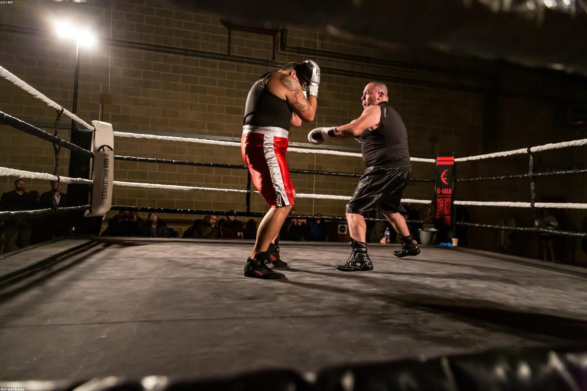

Altro
Scienze Motorie

Scienze Motorie è la materia che ci aiuta a non dimenticare quanto sia importante l'equilibrio tra mente e corpo, soprattutto in un indirizzo come il nostro dove si passa molto tempo davanti a uno schermo. Durante l'anno abbiamo praticato sport di squadra e individuali.
Mi è piaciuto in particolare il progetto proposto dalla professoressa sulla tonificazione muscolare, perché mi ha permesso di lavorare in modo più consapevole sul mio benessere fisico e sulla corretta esecuzione degli esercizi. Anche la parte teorica sull'apparato cardiocircolatorio è stata interessante, perché mi ha aiutato a comprendere meglio come il corpo reagisce e si adatta all'attività fisica.